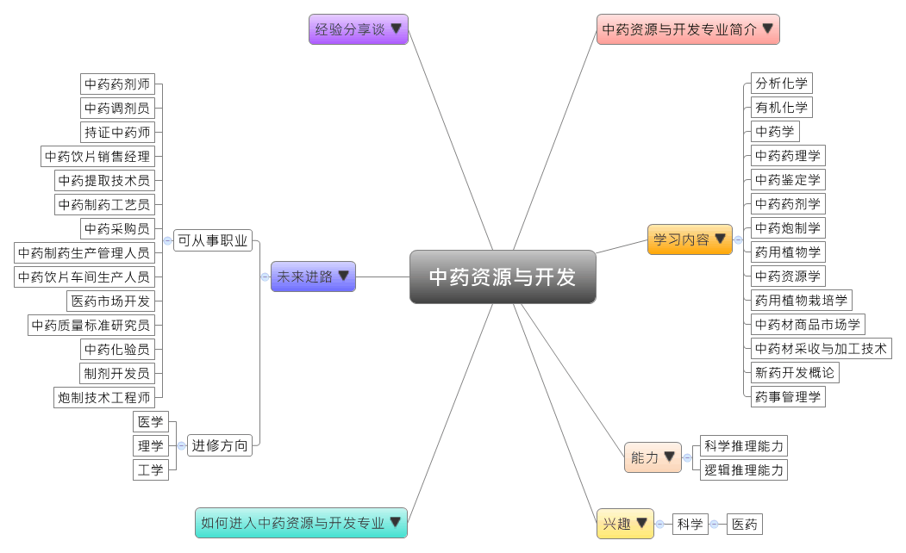

- 专业大观园
-

- 专业介绍
-
什么是中药资源与开发？
中药资源与开发是中医治病、中药制药的物质基础，中药资源与开发专业是我国医药卫生事业发展的重要基石。本专业主要从事中药资源调查、中药材栽培、中药材鉴定、中药原料采购、中药新药研究开发、中药资源的综合开发和合理利用等工作。
中药资源与开发专业培养掌握中药学与中药资源学的基本理论、知识和技能，能够在各类中药和中药资源研究开发机构、高等院校、制药企业、流通领域及行政管理部门等单位从事中药资源调查、开发、科学研究、综合利用、生产加工、质量监控、营销与管理的高级中药资源学专门人才。

田野教學－認識藥用植物 研究員正在鑑定藥物植物
- 学习内容
-
中药资源与开发专业学生主要学习中药的基本理论和基本知识，获得调查分析中药资源和中药材培养生产、中药资源的综合开发和利用以及保护更新方面的知识和技能。学生将受到系统的中药资源与开发的专业基本训练，具有中药资源调查，中药原料的生产、加工，中药新药开发和中药资源的综合开发的基本能力。
本专业学习方向为中药资源调查、中药材栽培、鉴定与采购、中药研究等。中药资源与开发专业主干课程有：分析化学、有机化学、生物化学、中医学基础、中药学、中药药理学、中药鉴定学、中药药剂学、中药炮制学、药用植物学、中药资源学、药用植物栽培学、中药材商品市场学、中药材采收与加工技术、新药开发概论、药事管理学等。同时开设医药学、生物学、农学相关学科的选修课程。通过毕业实习，掌握坚实的中药资源调查、开发和合理利用、保护与更新，以及药用植物的栽培、中药新药研究方法与技能。
本专业可以习得的知识与获得之能力、技能列点： 第一、具备中医药学的基本理论知识；第二、掌握中药资源的调查规划、开发利用、保护更新和经营管理的知识与技能；第三、掌握药用动植物的种质保存、引种驯化、栽培饲养的知识与技能；第四、掌握寻找与开发中药新资源的初步能力和与本学科专业相关的现代科学知识和技能。
- 能力
-
中药资源与开发专业学生，需具备以下能力：
相关性向能力 说明 逻辑推理能力  能掌握中药资源与市场开发的关系
能掌握中药资源与市场开发的关系
能了解药物栽培的成效与环境的关系科学推理能力 掌握中药材采收与加工技术
具备中药鉴定、分析与炮制的能力语文能力 具备口说与文字的表达能力，以从事药用资源的研究
具备精良的中外语能力，熟悉国内外药用动植物的医学资料
- 兴趣
-
若你对下列活动或事物有高度兴趣，可考虑进入中药资源与开发专业学习：
科学 医药 对研究各式中藥材感兴趣
喜歡從事資源調查與研究的相關事務
對於使用中藥達到医疗、保健和强身等感興趣
- 如何进入此专业
-
下面列举开设中药资源与开发专业的211工程重点大学院校：
- 未来进路
-
可从事职业
中药资源与开发专业的畢業生知识面宽，且基本功扎实，主要可从事中药资源调查、中药材栽培、中药材鉴定、中药原料采购、中药新药开发等工作。亦可继续攻读中药学、生药学、生物学等相关专业的硕士学位，或到中药科研单位、中药原料药生产加工企业、药用植物种植单位、中药制药企业、环保部门等从事中药资源規劃，以及合理开发與利用中藥資源。在工作职场上皆能发挥药材鉴定、资源开发等专长：
行业 职业 卫生 中药药剂师、中药调剂员、持证中药师 医药制造业 中药饮片销售经理、中药提取技术员、中药质量人员、中药制药工艺员、中药采购员、中药制药生产管理人员、中药饮片车间生产人员、医药市场开发 学校、科研、培训 教授、中药质量标准研究员、中药提取研究员、中药化验员、制剂开发员、合成开发员、炮制技术工程师 进修方向以下列举中药资源与开发专业毕业生可以继续修读之学科门类、一级学科与硕士点：
学科门类 一级学科 硕士点 医学 中医学方剂学、中医药外语、临床中药学、医药卫生法学 药学药理学、药剂学、药物化学、药物分析学、微生物与生化药学、生药学、药学、社会与管理药学、免疫药物学、药物代谢动力学、天然药物化学、生物药学、生物技术与工程、临床药学、制药工程学、药物生物信息学、药事管理学、中药与天然药物学 中药学中药学、中药资源学、中药生物工程学、中药制药学、中药药理学、中药生药学、药物化学、中药药剂学、民族药学、中药分析学、中药药物化学、中药制药工程学、中药鉴定学、中药生物技术学 理学 化学中药学、中药资源学、中药生物工程学、中药制药学、中药药理学、中药生药学、药物化学、中药药剂学、民族药学、中药分析学、中药药物化学、中药制药工程学、中药鉴定学、中药生物技术学 药学药物化学、微生物与生化药学、药剂学、药理学、药物分析学、生药学、化学生物学 中药学中药学 工学 生物与医药生物与医药
- 经验分享谈
-
为开发和利用中药资源作出了突出贡献——叶橘泉
叶橘泉生于一个贫苦农民家庭。７岁时，村里私塾先生张天源见他聪明伶俐，求知欲强，便主动提出免费让叶橘泉读书。童年时代的叶橘泉十分珍惜这个来之不易的机会，整日勤奋苦读。青年时代的叶橘泉不满足于在老师那里学到的知识。他潜心研读了大量的医药著作和文献资料，其中包括相当数量的日本汉方医药中译本，如《化学实验新本草》等。为了能看懂原著，他还自学并掌握了日本语。大量的阅读，开阔了眼界，在此基础上，他揣摩得失，以求创新，设计了不少独特的处方，治愈了许多疑难杂症，以精湛的医道，闻名乡里。
叶橘泉在苏州参与创办了国医研究院，并任药物学和方剂学教授。
叶橘泉对历代中医药界的门户之见一直持批评态度。他就极力主张中医各家之间宜相互交流，取长补短，以促进中医药学的发展。因此，他创办“单方实验研究社”，编辑经验单方，按期出版，征集临床实验的疗效，互相交流。此外，他还积极主张开展国际间的学术交流，以促进中医药的推陈出新。
叶橘泉在本世纪初期的这些思想、主张和实践是难能可贵的，在当时是新颖和开创性的，对于继承和发展祖国的传统医药学，推动中医药事业的发展产生了积极的影响。这是他为我国医药学事业作出重要贡献的组成部分，也是他在国内外医药学界享有崇高地位和声望的关键所在。 【资料来源：为开发和利用中药资源作出了突出贡献的叶橘泉[EB/OL]. 江苏中医药信息网，2006-03-22】